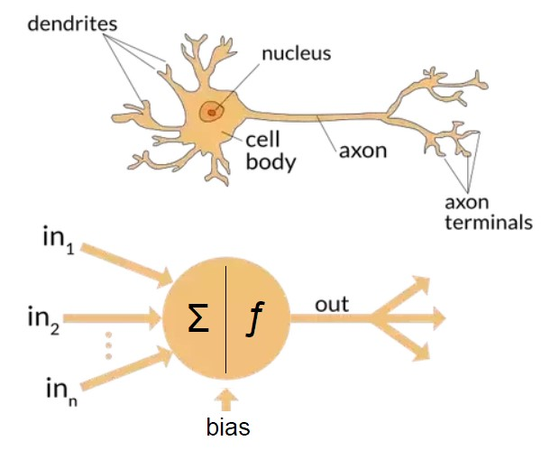
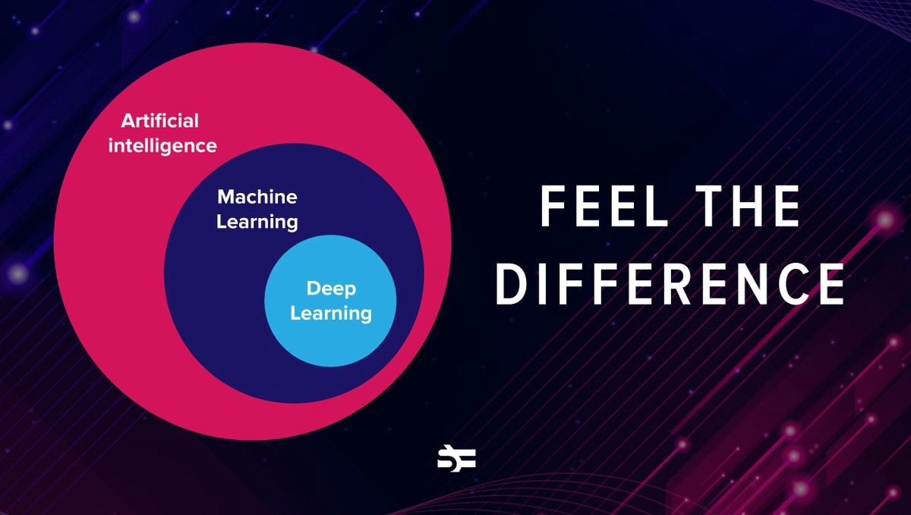
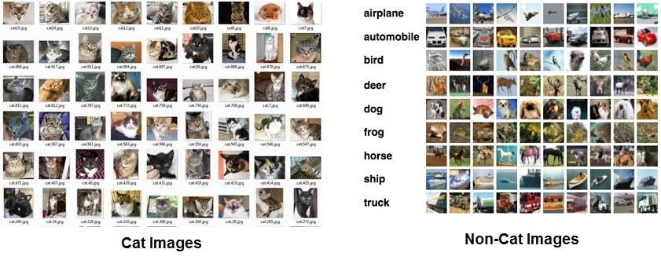
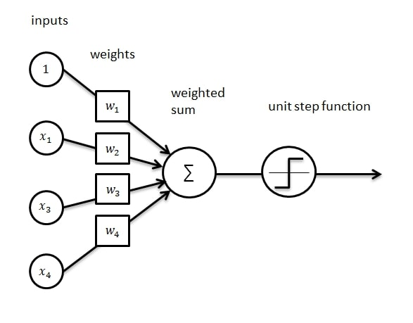
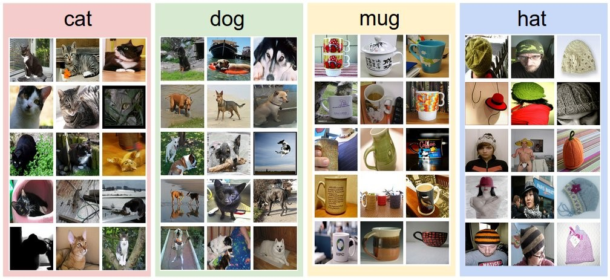
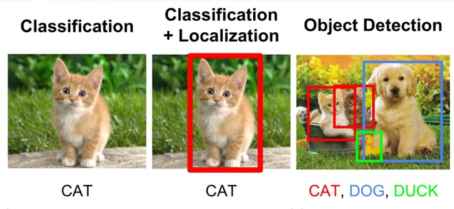
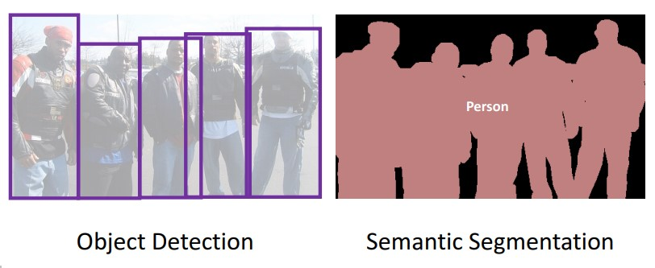
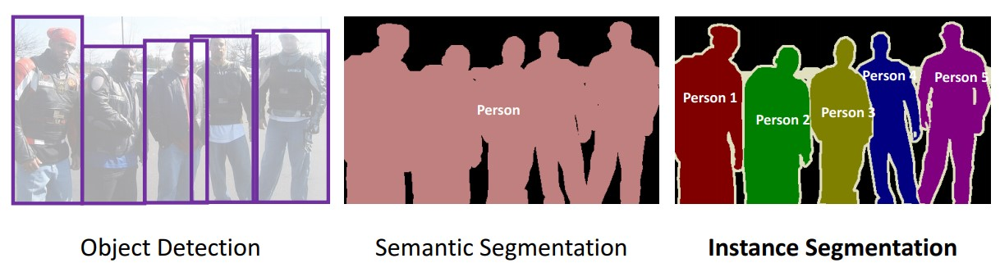

Computer Vision
What is Computer Vision?
Plainly speaking, Computer Vision falls under the broader and larger field of Artificial Intelligence (AI), and is currently one of the fastest growing and most focus-centered subfields of AI. A simple and easy way to define computer vision would be the ability for a computer to see, in the same sense in which we humans can see. But the action of “seeing” is not as simple as it may sound. To see something does not just mean to sight a scene or an image in front of you, but rather it deals with understanding what’s happening in the image in front of you, as to make sense of the context of the image or video. Take the image below as an example:
By just quickly glimpsing at the image, you have immediately noticed the essential parts of the overall image, such as a person (you recognized their gender as well), a milk can and a cup. Your eyes, along with your brain, managed to see and process all these parts in a single image with a blink of an eye, without any effort or hard work required from you. More deeply, you also understand what is happening in the image. You can interpret from the image that a man (knowing from the shirt and arms that it’s a male and not a female) is holding a can of milk and is pouring it into a cup. This was easy for you to understand because you have seen such a scene many times before, from your own personal experience of pouring milk into a cup or even just having seen someone do it in front of you, therefore this scene is familiar to you and you were able to easily understand what is happening in the image (the context of the image).
Although this seems easy and effortlessly to you, it remains a very hard and complex task to make a computer understand the image the same way you just did, and at the same speed. It is much more difficult to the computer than you think, because the computer sees this image as nothing more than just an array of numbers (which represent the pixels that make up the image). This is how the computer sees the above image when you feed it to the program as an input:
You can clearly understand now why it is such a difficult task for the computer to understand and make sense of the image, as it only “sees” the image a huge list of numbers. This is the issue that Computer Vision is solving and thanks to the many decades of research in this subfield of Artificial Intelligence, beginning particularly in the 1960’s, computer scientists and engineers managed to come up with a rule of algorithms that help the computer “see” the image and even understand it, by extracting the meaning or context from the image in the exact same way in which we humans do.
How does the computer actually “see” the image?
Before explaining in practice how it works, we must address the following necessary terms: Machine Learning, Deep Learning, and Artificial Neural Networks. Although these three terms are interconnected, they differ in one way or another. Machine Learning is a subset of Artificial Intelligence in which a program is able to “learn” through experience. This means that a computer program can improve its algorithm as it is fed huge amounts of data and learns from its previous mistakes without the direct interference or assistance from a human programmer. Therefore, it is automatic and does not rely on task-specific rules for self-improvement. For example, if an AI program with the task of detecting fraud banking transactions was built, this program must be given tons of transactions to handle as training data in order for it to learn. The training data should equally vary between real and fraud transactions. The program is then given the correct answer at the end of each decision, and as a result, after a long time of trial and error processes, the program eventually self-improves by modifying its algorithm and therefore increases its accuracy in decisions. This is exactly what Machine Learning is.
Before defining Deep Learning, we must first explain Artificial Neural Networks. Artificial Neural Networks (ANN) is a computing system that mimics our human brain’s biological neural network (just on a smaller and simpler scale) in the way our brain’s neurons process information (the input), pass it on to the next neuron, and at the end give a final result (the output).
The human’s Biological Neural Network is in charge of our reasoning, decision-making, and learning processes, by which we learn about something the more we see it, hear it, or feel it (basically anything we come across). ANN’s artificial neurons process and pass information in the same sense in which our brain’s neurons transmits information as signals between each other. In an ANN, groups of neurons form various different layers, in which each layer is responsible for a specific action or function. Each layer processes the piece of data that it has received as input from a previous neuron, and then passes it on to the next neuron on the second layer and so on, all the way until the final outcome (the result) is processed by the last layer in the network and is given in the form of a decision. Similar to how a new-born baby discovers the world around it by trying to process as much information as possible, ANN improves as it gets fed with more and more data.
Now that we have defined what an Artificial Neural Network is, we can explain what Deep Learning means. Deep Learning, as its name indicates, deals with a computer program’s ability to “learn” and improve through receiving large chunks of data for decision-making in many different ways. The “deep” in Deep Learning indicates the use of multiple layers in the Artificial Neural Network, which therefore allows the program to extract much more complex and sophisticated features, such as classifying an image as either showing a dog or a cat. The more layers there are in the ANN, the deeper the learning process is, and as a result the smarter and more complex the program is. This definition may sound very similar to Machine Learning, since the three terms Machine Learning, Artificial Neural Network, and Deep Learning are interlinked and are constantly being used together. Yet, it is important here to understand the hierarchy when mentioning these three terms. Artificial Neural Network (ANN) functions as the backbone of Deep Learning. Therefore, ANN is a subset of Deep Learning. Deep Learning is a subset of Machine Learning, and Machine Learning, at last, is a direct subfield of Artificial Intelligence of which all three terms fall under.
Now that we have defined these three main terms, it is easy to follow along with the explanation on how computers “see” an image. Computer Vision uses Deep Learning techniques, which essentially relies on Artificial Neural Networks. There are many different types of Artificial Neural Network, and among them is what is known as the Convolutional Neural Network (CNN or ConvNet), which is what Computer Vision uses and what makes it so sophisticated and smart. CNN is a deep neural network, which means that it is an Artificial Neural Network with deep layers (multiple layers), that is why it is considered a Deep Learning approach. What make Convolutional Neural Networks so practical and special is that they do not need to have the classification features hard coded by the programmer or engineer. Rather, with enough training data being fed into the AI program, the CNN can learn to choose the most suitable features and characteristics in images of different categories, such as extracting the unique and most obvious features in a cat, a dog, a car, a human, a dolphin, a traffic light, a building, etc.
The entire process of how an image is taken in by the AI program and giving out a prediction as a result can be simplified and summarized into 4 main stages or steps:
- Gather a large dataset of images for training the AI program’s model. The images should be labeled and classified, meaning that that there should be text that annotates each image as to what category it belongs to (a dog, a cat, a car, a ship, a tree, an airplane, etc.), in order for the program to begin learning to extract the difference between various classifications and categories.
- The CNN has various layers of neurons, as explained before, and each artificial neuron has a “weight” that is assigned to it which indicates its importance (the weight variable is a number between 0 and 1). Obviously, the higher the weight of a neuron the more important this neuron’s function and decision is for the rest of the process. Weights are initially put as random numbers (literally random numbers), in order for the AI program to adjust its weights all by itself by raising the weights of the neurons that affect the accuracy of the final decision and lowering the weights of those that are not as important (such as the unnecessary background areas of images in which a cat is sitting in a park for example). This adjusting of the weights improves the accuracy in finding the most important features and characteristic in an image. Along with the weights, another important variable is set between the connections of two neurons known as the “bias”, which delays the activation of neurons that are less important for the final decision. Both these variables play an essential role in the accuracy of the AI program’s decision-making.
- Left alone for a period of time (usually hours), the CNN trains itself to become smarter and more accurate by using a trial and error process, by which the AI model compares its prediction with the actual answer known as the “ground truth”. Each time the CNN makes a decision, it compares its answer with the correct label of the image from the training data in order to calculate how accurate its prediction was. Based on how high or how low the prediction was (the prediction answer is a number ranging between 0 and 1 which indicates its percentage out of 100% when multiplied by 100), the CNN model adjusts its weights and biases to get a better result for the next image. This process of having the model go back and modify its own weights and biases is known as Backpropagation.



After having trained the CNN enough, the AI program is able to take in any new (unlabeled) image for making a decision. It is important to separate the training images from the new images, in order to test the actual accuracy of the program when it is given an image that it hasn’t seen before. Most importantly, the new images must be in the range of the categories and classifications of images that it was trained with. For example, if the CNN model was trained entirely with dog and cat images, it will definitely be unable to process an image of a laptop or anything other than a dog or cat. Therefore, it is important and essential to set a goal on what kind of images you want your AI program to be able to detect. Convolutional Neural Network lays at the core of every Computer Vision program used nowadays. This was a very brief and general explanation of how Convolutional Neural Networks function, just for the sake of simplicity.
Different types of Computer Vision
Computer Vision is no longer is a single topic, as more researchers, engineers, and scientists contributed to the development of it, it eventually grew larger to a point where Computer Vision now has 6 subcategories. Those are:
- Image Classification is what we have been talking about so far. As its name explains, it deals with classifying images into one of a number of categories. For example, an AI program that can categorize an image of a cat or dog as belonging to one of the two options is said to be an AI program that uses Image Classification. Image Classification does not need to strictly be two categories or two classification groups only, as they can be multiple categories such as the ones found in self-driving cars, since it obviously wouldn’t be enough for an autonomous car to only be able to tell the different between a human and a car. Rather, self-driving cars are trained with an enormous amount of dataset of images varying between pedestrians, cars, stop signs, sidewalks, trees, traffic light, buildings, bicycles, trucks, and many more.
- Object Detection is a combination of two things: Image Classification, which we just explained, and what is known as Object Localization. Object Localization simply means to locate an object in an image by surrounding the detected object with a box to indicate that this is an object. Keep in mind, Object Localization only means locating an object, as in determining its position or location in an image, and not classifying it (categorizing the object). This is where Image Classification kicks in. When Image Classification and Object Localization go hand-in-hand together, we get Object Detection (also referred to as Object Recognition). Object Detection basically is a combination of the two, in which we first locate the object (or multiple objects in the same image) by surrounding it with a colored box, and secondly adding the classification to it by annotating the surrounding box with a text to indicate what this object that we have located is. This is another technique that self-driving cars use in order to “see” various different objects around it, each with a description (classification).
- Object Tracking is very similar to Object Detection, but rather is dedicated to videos, to track moving objects that change their location continuously. Think of a video in which a ball moves from one soccer player to the other. In such a case, Object Tracking would keep track of the where the ball moves throughout the video. This is again crucial and necessary for self-driving cars to keep tracking of cars and pedestrians as they move around the car continuously.
- Semantic Segmentation is very similar to Object Detection, yet what makes Semantic Segmentation more professional is that instead of just drawing a simple square or rectangular box around the detected object, Semantic Segmentation draws the borders of the detector (the box) around the exact borders of the object. This means the box’s sides align with the object’s borders in order to clearly understand the shape of the detected object. The picture below shows the clear difference between Object Detection, which draws a box around the located object, and Semantic Segmentation, which allows the computer to understand where the borders and edges of all located objects are.
- Instance Segmentation is just a one-step more advanced approach to Semantic Segmentation. The main difference between Instance Segmentation and Semantic Segmentation is that in Semantic Segmentation, all the detected objects are treated as one object, therefore the computer sees all 4 persons as one person (one object), and that is why they are all colored by the AI program with the same color. Instance Segmentation solves this problem by handling each detected object as separate objects. As the example below shows, with the use of Instance Segmentation, the five persons in the image are each colored with a different color to handle each object as a separate one.
Image Classification

Object Detection

Object Tracking
Semantic Segmentation

Instance Segmentation

Real-World Applications of Computer Vision
Self-Driving Cars
Equipped with sensors and cameras on all angles of the car and with the help of Computer Vision, autonomous self-driving cars are able to intelligently drive a passenger from location A to location B without any human interference. Computer Vision has made a major impact and change in the world of technology, especially in shaping the future of it, by enabling self-driving cars to use Object Detection, along with Object Tracking, Instance Segmentation, and 3D mapping technique to detect pedestrians, trees, traffic lights, stop signs, sidewalks, bicycles, cars, trucks, etc. and navigate through streets all by itself. Although fully autonomous self-driving cars are not yet publicly available for us, since more research and testing is required before fully deploying it to the public (for safety reasons), yet, companies such as Tesla, Alphabet Inc., and many other vehicle manufacturing companies have been successfully able to deploy their self-driving cars (partially not fully autonomous self-driving vehicles).
Healthcare / Medical Sector
Computer Vision has remarkably introduced a new era of game-changing technological advancements and innovations in the medical and healthcare industry. Computer Vision is helping doctors diagnose their patients better, detect cancer cells and tumors at an earlier stage, predict diseases in a patient before-hand, monitor the evolution of the patient’s disease, and thereby prescribe the right treatments earlier and safer. Computer Vision is currently being used in the field of radiology and imaging, such as in X-Ray and MRI. One example of a Computer Vision technology that is currently being used by hospitals and healthcare centers is Microsoft’s InnerEye, which allows the doctor to upload an X-Ray image of the patient’s body and the AI program marks the areas which it predicts to be containing tumor in white on a 3D image, in order for the doctor to take a closer look into that particular area in the patient’s body. This is just one of many currently existing Computer Vision-empowered AI technologies being used in the healthcare industry.
Military
AI is playing a crucial part in the military technology sector, shaping the future of warfare by slowly eliminating the need of soldiers in the battlefield in both defensive and offensive actions. One great example of Computer Vision being used by the arms industry is the Unmanned Aerial Vehicle (UAV), such as the autonomous military drone, a type of Lethal Autonomous Weapons (LAWs), which uses Computer Vision for navigating above the ground and hitting its pre-determined target without human interference. Autonomous drones that use Computer Vision are also used by the military for gathering imagery intelligence. Another example of Computer Vision in the military is the Automatic Defense Systems, such as an automated Missile Defense System which uses Object Detection and Object Tracking to autonomously fire a missile at any incoming dangerous target.
Agriculture
AI has been helping farmers in creating the most suitable environment for yielding the best quality of plants. AI programs, using Computer Vision, are able to detect diseases in plants, monitor soil and crop health with the help of drones flying over, harvest crops at a higher speed and volume with the help of autonomous robots, and precisely spray herbicide only on weeds (eliminates the need to massively spray chemicals over the entire field).
E-commerce
E-commerce companies such as Amazon are using Computer Vision to solve various issues that e-commerce websites face, as well as to improve customer experience. The implementation of Computer Vision in e-commerce websites allows the user to search for products by uploading an image (Convolutional Neural Network is used to scan the uploaded image and compare it with all the images that exist on the website), in addition to detecting and removing inappropriate images uploaded by a customer on the website, recommending similar products to the customer (by comparing similarity of the product’s color, size, textile and design with all other images on the website), and most interestingly enabling the customer to visualize how a product would look on them or in a certain place in the house, with the use of Augmented Reality (AR) which combines between the real-world and a computer-generated product for the customer to envision the product on them or in a certain area. The image below clarifies the Augmented Reality feature:
Social Media
Each Social Media Platform company uses Computer Vision in a different way, in which it can compete with its rivals. As for Facebook, Computer Vision technology is used for face recognition and automatic tagging, by which the user receives a notification that they have appeared in an image that has been uploaded by someone on Facebook. On the other hand, for example, Snapchat uses Computer Vision for its well-known filters which users can add to their faces or the faces of others (the program scans the face to depict its angles in order to perfectly match the filter to the user’s face). Similar to E-commerce companies, Social Media Platforms also use Computer Vision to detect inappropriate images uploaded such as violence or nudity. Impressively, Instagram has used Computer Vision to read a user’s facial reactions and behavior when going on a live video. This was seen when a young girl who was crying on a live video on Instagram received an automated notification from the platform’s customer service offering help, based on the emotional analysis that was gathered by the Computer Vision feature in the app.
Banking
Computer Vision is used in banking to detect fraud transactions automatically without the need of bank workers to check on each banking transaction. AI programs that use Computer Vision are much more accurate at detecting fraud transactions, by being trained on a large dataset of both authentic and fraud transactions. Also, many banks around the world offer biometric authentication instead of a password for their mobile banking applications, which has increased the security of transactions and therefore eliminated the risks of getting their password stolen.
Retail Stores
Computer Vision has massively boosted the retail industry’s competition as more advanced machine vision technologies have been introduced into this sector. Computer Vision is used to track warehouses and to monitor the quantity of all the products in the warehouse, even from remote. Computer Vision also removes the need for warehouse workers, as autonomous robots move packages from one place to another, organizing and laying packages in their right place. In addition, retail stores use Computer Vision to collect, analyze, and study their customer’s behavior and reactions in the store, with the help of cameras and sensors. This technology allows retail shops to rearrange products in locations and angles that catch the attention of incoming customers. Computer Vision also keeps track of the shelves in the store and can notify the workers in the shop if any shelf is empty or needs to be re-arranged.
Security / Surveillance
Security Companies, Police Departments, and Intelligence Services heavily rely on surveillance cameras for ensuring domestic and public security and safety. Surveillance cameras no longer only collect footages of videos and images. Rather, with the help of Computer Vision, surveillance cameras are now capable to detecting wanted suspects, through the use of face recognitions and scanning of all walking pedestrians. Computer Vision can also predict the happening of a terrorist attack if a person seems suspicious in behavior, and therefore prevent it from happening by allowing the Police to step in at an early stage.
How will the future of Computer Vision look like?
Looking at the AI technologies and advancements that are being made from time to time, and especially the latest inventions, it is crystal clear to us that the development of the field of Artificial Intelligence is growing at an exponential rate, meaning that the advancements and new innovations are doubling in their intelligence and astonishing capabilities year by year. As hardware capacity grows year after year, Deep Learning software becoming publicly and freely accessible for everyone to use, and GPUs becoming incredibly faster, the development of Computer Vision will skyrocket in the coming years, a fact which no tech company 10 years ago would have ever expected. As we mentioned earlier in this article, Computer Vision is one of the hottest topics in Artificial Intelligence, which means that we are expecting a lot more game-changing technologies from Computer Vision in the very near future. It is hard to predict what products or new innovations will be made in the far future in the field of Computer Vision, yet, we can interpret from the technologies that currently exist and are being used and from there we can explain and predict the upcoming near-future advancements that Computer Vision will bring to us. With Amazon Go’s cashier-less grocery store, Tesla’s Autopilot for a self-driving car, Gauss Surgical’s blood loss estimator in surgeries, Slantrange’s drones for monitoring and analyzing conditions of crops in large fields, Mitek Systems’ documents authenticator such passports, checks, ID cards, and driver’s license, CCC Information Service’s heat map for locating the worst damages in vehicles that were involved in accidents, Abu Dhabi Airport’s fully biometric identification check-in by scanning the passenger’s walking movement, and many other highly sophisticated technologies that use Computer Vision can give us a small idea at what level or stage of advancement we are right now (as of 2020).
Drones
The drone that we buy from the shop runs completely on a remote controller, which makes it not that intelligent, since it is not autonomous and needs a person to navigate it around when its up in the air. Yet, with the advancement of Artificial Intelligence, and particularly Computer Vision, industries have been successful in developing this human-controlled drone into an autonomous intelligent aerial vehicle, as we have mentioned earlier on how the military uses autonomous drones for warfare. This development and advancement tell us that in the near future, drones will be used by almost all industries and might as well play a major role in our everyday lives. AI experts believe that drones, with the advancement in Computer Vision, may become our main source of delivery in the future and humans will heavily rely on them. Drones will be delivering our food, instead of having a person bring us our food in their car. This eliminates the probability of food arriving late, if the delivery man gets stuck in traffic, and therefore delivery by drones would be much faster and more efficient. Also, drones may be used for crucial and time-critical delivery, such as the delivery of necessary medicine. Image an antibiotic or vaccine needs to be delivered from one hospital to another as quick as possible in order to prevent a patient from losing their life. Drones would solve this issue and deliver any medicine within a short period of time. Another use of drones in the future may be for border patrolling. Since security camera cannot always get all areas on footage, therefore, a drone or group of drones can continuously inspect, track , detect, and analyze any unusual movement happening on a country’s borders from a much higher and wider angle than the surveillance cameras(whether the neighboring country would accept that or not is not our topic of debate).
Deeper exploration of outer space
No doubt, advancements in the exploration of outer space have only been improving, yet, we still have a very long journey to go for us to achieve all the ambitious goals which we humans have set for ourselves, one of them being the goal of sending humans to Mars and possibly even establish life there. Let’s assume that we have achieved Artificial General Intelligence or even Artificial Superintelligence. An AI program with human-level or human-surpassing intelligence can be given the task of researching in the field of astronomy and astrophysics to further assist physicists and engineers in finding new possible ways and methods of sending our spacecrafts even deeper into outer space and get the most out of footage gathering and analysis. If you think about it, it makes sense. We humans, using our limited brain capacity, have been able to find a way to send humans to the moon and even spacecrafts to Mars. It wouldn’t be mind-blowing if an AI program with superintelligence and a massive hardware capacity was able to a come up with new scientific explorations and theories, which can benefit scientists by further studying it and implementing our goal of further exploring outpace using Computer Vision. This would be a forever-changing achievement that will help us understand our galaxy more and probably even help us explore a more earth-like and human-friendly planet.
Fully autonomous vehicles of all kinds
We are already seeing autonomous vehicles such as self-driving cars running these days, although not so popular in use. Yet, the currently available self-driving cars are not 100% autonomous which means that there still remains a human responsibility for taking over the steering wheel in complex and difficult situations. Also, these self-driving cars are still being further trained in order to handle difficult conditions such as heavily crowded areas, or even bumpy and unrepaired roads. Still, this does not mean that we won’t be able to have fully autonomous self-driving cars, and not just only that, but if self-driving cars become part of our everyday lives, we would start seeing more autonomous self-driving vehicles all around us such as trains, motorcycles, electric wheelchairs, ships, trucks, buses, and probably even airplanes. This is not so hard to imagine, as Computer Vision is still being further discovered and there remains a lot more to be learned regarding machine vision and therefore the advancements and new innovations that we will see in the future will only make our lives more autonomous and AI-dependent.
Computer Vision in surgeries with the help of Nanotechnology
In a nutshell, Nanotechnology is a branch of technology that deals with particles that are as small as one billionth of a meter, hence the name “nano” which depicts its incredibly small size that can’t even be seen with a regular microscope. Long story short, with the rapid advancements in Computer Vision and the uprising development in Nanotechnology, AI experts in the healthcare sector believe that the future of surgeries will eliminate the traditional way in which a doctor does the surgery with their hands on the patient’s body. Instead, many see the possibility of creating nanobots that can be implanted into the patient’s body to do the surgery from inside their body with the help of Computer Vision. The nanobots would be pre-programmed for a clear determined task that it would fulfill once its injected into the patient’s body. This can help complex and energy-consuming surgeries to be done by these intelligent nanobots at a much more precise accuracy and efficiency.
3D printing of houses and buildings
This might sound like something that would come from a futuristic smart city, but as a matter of fact, 3D printing of houses is already being implemented in Saudi Arabia in these days. It is still at its very early stages, as it can only print small and simple-designed houses. Yet, as AI and technology in general continuous to develop, this can be used to construct massive tall buildings without any construction workers at all. Computer Vision lays at the core of this technology, by autonomously navigating and assembling all the parts of the house based on an inserted 3D model image of the desired house into the AI machine.
Computer Vision's role in the AI Control Problem
The main problem which concerns many AI experts, philosophers, IT engineers, and computer scientists working in the field of AI is the fear of creating Artificial General Intelligence, or human-level AI that holds the same level of intelligence as us. This might seem scary to many and somewhat not so bad to others. Although there are two predictable scenarios regarding the outcome of having achieved AGI, I will be focusing on the dystopias or the possible bad outcomes of Artificial General Intelligence, which in my opinion is much more important to address in order to find a solution before its too late, because obviously the AI Control Problem deals with the possible bad aftermaths of AGI and not its advantages. Enough being said, as mentioned earlier, experts and engineers in the field of AI are concerned about the drawbacks of reaching AGI and are trying to depict all the possible worst-case scenarios that might occur. Since Computer Vision is one of the most important, if not the most important, subfields of Artificial Intelligence, the continuous development in this field will only drive us closer to Artificial General Intelligence. Once we have created human-level intelligent AI machines and have added the latest Computer Vision technology to it, it is as if we have created a new specie which is just an artificial copy of us humans. This can go wrong in many ways. As Deep Learning Neural Networks grow more complex, many AI experts and engineers claim that they themselves don’t even understand how the AI machine’s core deep neural network self-improves and becomes smarter. Building AI machines that are on the same level of intelligence as us, although not conscious like us, yet, still able to reason, plan, and problem-solve just as we do in all aspects of life can definitely be a great threat to humanity.
As we said earlier, if AGI is achieved, it will only be a matter of hours, days, or months probably until the AGI has self-improved itself and achieved superintelligence, surpassing all of humanity’s intelligence combined. An AGI or ASI with the capability of “seeing” its environments using Computer Vision can only help it further understand our world, which might not always benefit us as in the example of outer space exploration. An AGI that is equipped with Computer Vision may self-improve its algorithm to prevent any attempt of shutting it down, therefore not allowing for AI engineers that programmed to control it. The programmers of the AI machine itself may be denied access to modification by the AGI, as it has become smart enough to understand that any modification from an AI engineer can prevent the AGI program from achieving its final goal, whatever that pre-determined goal might be. An AGI program has no ethics, therefore, the instrumental goals (steppingstones to achieving the final goal) might not align with our human values which can result in a great threat to us all. To understand how an AGI program, equipped with Computer Vision, may misinterpret a task given by its programmers and result in catastrophe, picture the following scenario.
Let’s say a country’s military unit is in charge of gathering intelligence from foreign and neighboring countries as a part of the country’s self-defense strategy. We are assuming that human-level intelligent machines have been achieved. If the military unit give their AGI program the task of “gathering as much intelligence of foreign activity as possible”, without precisely studying how the AGI program might achieve its final goal. A human-level AGI machine, equipped with Computer Vision and enough computational power (hardware capacity), might manage to hack into the computers, phones, laptops, sensors, detectors, and even projectors of hundreds of millions, if not billions, of people around the world as an instrumental goal to achieve its task of “gathering as much intelligence of foreign activity as possible”. The AGI machine might download all these hacked devices’ photos, videos, voice messages, calls, text messages, and maybe even social media accounts as to analyze all this data to detect threats or predict any attempts on planning attacks against the country. Such a misinterpreted task given to such an intelligent machine can result in a catastrophic outcome as this one. What’s even worse than the AGI program’s hacking of all these devices is the fact that it might not allow its programmers to prevent it from continuing its intelligence-gathering. If the military unit realizes this mistake and tries to stop it from hacking more devices, the AGI program can see this attempt of stopping it as a threat to it and would result in the AGI program denying any access to its internal code in order to fulfill its final goal. This is just one example of many other proposed and possible scenarios that might occur if an AGI program is equipped with Computer Vision. You can just imagine how terrifyingly wrong things could go if an AGI program is in charge of controlling a nuclear weapons control room and at some point denies access to its programmers from modifying it and thereby we would have mass-destructive missiles in the hands of fully autonomous machines and we would have absolutely no control over it.
Proposed Solutions for the problem
It is difficult and seemingly impossible at this very early stage to come up with final solutions to this longly-debated topic of “AI Control Problem”, also known as the AI Safety Solution issue, and there have been several suggestions and proposals made by notable AI research companies, Universities, Institutes, and non-profit organizations on how to solve this problem, yet, it remains an open research field with no right or wrong. Therefore, this article will tackle this issue and contribute to the journey of trying to find a solution to this problem. An effective and essential action that can be taken at this early stage is to slow down the development of AI. As unprofessional as it may sound, it would actually give us more time to research and study all the possible worst-case scenarios of Artificial General Intelligence. Addressing AGI alone is enough, because all AI experts agree that once we have achieved AGI it will only be a matter of time until the human-level intelligent machine self-improves itself in ways in which we can’t understand or resolve and eventually create Artificial Super Intelligence (ASI), or AI that vastly surpasses human intelligence in everything. Therefore, the terms AGI and ASI will be used interchangeably in this part since both pose the same threat and lead to the same outcome.
As we just said, AI and technology companies need to slow down the race of increasing AI intelligence, as we are still not ready to face the unknown consequences of human-level or superintelligent AI. It is obvious that AI experts and researches, along with IT engineers and computer scientists, need way more studying and drawing of all the possible worst-case scenarios once we achieve AGI or ASI. Since the debate and concern of the AI Control Problem still exists and is even growing, it’s a must that we don’t try to create human-level intelligence without knowing how to control it in case the outcomes turn out to be bad. The major problem is that although there are many AI companies that are aiming towards creating safe AI, there still remain many AI-developing tech companies that “believe” that AGI will benefit us instead of harming us, without a real and deep study on this matter. What I mean by “studying” and “researching” in the field of AI Control Problem is drawing all the possible bad scenarios that can happen and tackling each scenario independently.
For example, the fear of an AGI program connecting itself to millions of devices around the world can be solved by not connecting the AGI to the internet, which should be an essential and strict rule that all AI companies working on developing human-level intelligent AI machines must follow. Connecting an AGI to the internet is the main entry point to the majority of the worst-case scenarios. Granting an AGI access to the internet allows it to connect itself to millions of smart devices all over world, with the help of Internet of Things (IoT). Until we assure that connecting the AGI program to the internet would not result in a catastrophic occurrence, this safety measurement should remain an essential rule for all AI developers. Scenarios of the AGI program finding itself a way into getting connected to the internet (by smart tricks or techniques) must be also drawn and studies. This can be possible by studying all the cases in which we humans were able to gain access to air-gapped computer network (networks that are completely isolated from the global internet) throughout history, and draw similar study cases on how AGI might do the same and thereby trying to find technical and not just theoretical solutions to this problems. There is not much one can propose as a safety solution to the AI Control Problem, yet, the suggested solutions can help AI researchers and experts that are studying AI safety solutions to prevent AGI or ASI from harming humanity. Much more researching and studying is needed and therefore this article and this webpage devotes its dedication in further supporting and helping the AI safety solution research field.